11 Summarising quantitative data
So far, you have learnt to ask an RQ, design a study, collect the data, and classify the data. In this chapter, you will learn to:
- summarise quantitative data using the appropriate graphs.
- summarise quantitative data using shape, average, variation and unusual features.
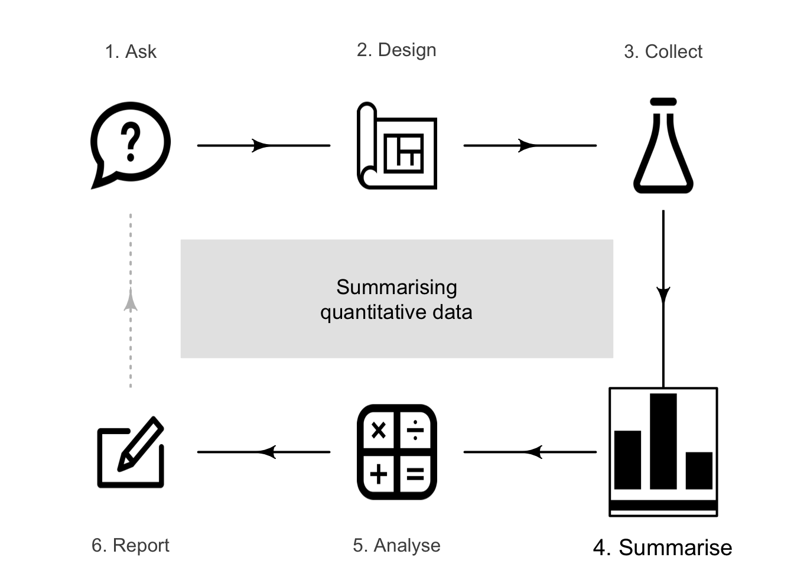
11.1 Introduction
Many quantitative research studies involve quantitative variables. Except for very small amounts of data, understanding the data is difficult without a summary. Quantitative data can be summarised by knowing how often various values of the variable appear. This is called the distribution of the data.
Definition 11.1 (Distribution) The distribution of a variable describes what values are present in the data, and how often those values appear.
The distribution can be displayed using a frequency table (Sect. 11.2) or a graph (Sect. 11.3). The distribution of quantitative data can be described by the shape (Sect. 11.5), and summarised numerically by computing the average value (Sect. 11.6), computing the amount of variation (Sect. 11.7), and identifying outliers (Sect. 11.8).
11.2 Frequency tables for quantitative data
Quantitative data can be collated in a frequency table by grouping the variables into appropriate intervals ('bins'). The intervals should be exhaustive (cover all values) and mutually exclusive (observations belong to one and only one category). While not essential, usually the categories have equal width.
A frequency table for discrete quantitative data uses bins defined to contain single discrete values, or a small number of discrete values.
Example 11.1 (Frequency table: discrete data) The data in Fig. 11.1 show the number of severe cyclones in the Australian region, for each year from 1969 to 2005.
A frequency table can be constructed by binning each discrete value individually (Table 11.1, left table) or grouped in pairs (Table 11.1, right table). The table gives the number of years, and the corresponding percentages, that recorded the given number of cyclones.
FIGURE 11.1: The cyclone data.
| Number cyclones | Number of years | Percentage of years |
|---|---|---|
| \(3\) cyclones | \(\phantom{0}8\) | \(22\) |
| \(4\) cyclones | \(10\) | \(27\) |
| \(5\) cyclones | \(\phantom{0}3\) | \(\phantom{0}8\) |
| \(6\) cyclones | \(\phantom{0}5\) | \(14\) |
| \(7\) cyclones | \(\phantom{0}2\) | \(\phantom{0}5\) |
| \(8\) cyclones | \(\phantom{0}4\) | \(11\) |
| \(9\) cyclones | \(\phantom{0}4\) | \(11\) |
| \(10\) cyclones | \(\phantom{0}0\) | \(\phantom{0}0\) |
| \(11\) cyclones | \(\phantom{0}1\) | \(\phantom{0}3\) |
For continuous data, care is needed when creating frequency tables. Bins must be carefully constructed, since all continuous data are rounded. The bins should be defined to ensure no values lie on the border between bins, and hence creating ambiguity.
Example 11.2 (Frequency table: continuous data) Figure 11.2 give the weights of babies born in a hospital on one day (Dunn 1999; Steele 1997), plus the gender of each baby, and the number of minutes after midnight of the birth (shown in birth order).
To display the distribution of birth weights, the weights can be grouped into clearly-defined weight intervals (Table 11.2, left column). Alternatively, the breaks between the bins can be given to one more decimal place than the data to avoid observations landing exactly on the bin divisions (final column).
The table also gives percentage of births in each bin; for example, the percentage of babies over \(4.0\,\text{kg}\) is \(1/44 \times 100 = 2.27\)%, or about \(2\)%. Most babies in the sample are between \(3\) and \(4\,\text{kg}\) at birth.
FIGURE 11.2: The baby-births data.
| Weight group | Number of babies | Percentage of babies | Alterative weight group |
|---|---|---|---|
| \(1.5\) to under \(2.0\) | \(\phantom{0}1\) | \(\phantom{0}2\) | \(1.45\) to \(1.95\) |
| \(2.0\) to under \(2.5\) | \(\phantom{0}4\) | \(\phantom{0}9\) | \(1.95\) to \(2.45\) |
| \(2.5\) to under \(3.0\) | \(\phantom{0}4\) | \(\phantom{0}9\) | \(2.45\) to \(2.95\) |
| \(3.0\) to under \(3.5\) | \(17\) | \(39\) | \(2.95\) to \(3.45\) |
| \(3.5\) to under \(4.0\) | \(17\) | \(39\) | \(3.45\) to \(3.95\) |
| \(4.0\) to under \(4.5\) | \(\phantom{0}1\) | \(\phantom{0}2\) | \(3.95\) to \(4.45\) |
Sometimes trial and error is needed to find useful intervals for continuous data. Usually, but not universally, the intervals include values at the lower end of the interval, but exclude values at the upper end (as in Table 11.2).
11.3 Graphs for quantitative data
The graphs in this section are appropriate for continuous quantitative data, and sometimes for discrete quantitative data if many values are possible. Sometimes, discrete data with very few recorded values are better displayed using graphs designed for qualitative data (Sect. 12.3).
Graphs used to display the distribution of one quantitative variable include:
- histograms (Sect. 11.3.1), which are best for moderate to large amounts of data.
- stemplots (Sect. 11.3.2), which are best for small amounts of data, and are only sometimes useful.
- dot charts (Sect. 11.3.3), which are used for small to moderate amounts of data.
The purpose of a graph is to display the information in the clearest, simplest possible way, to facilitate understanding the message(s) in the data.
11.3.1 Histograms
Histograms are a series of boxes, where the width of the box represents an interval of values of the variable being graphed, and the height of the box represents the number (or percentage) of observations within that range of values.2 The height of the histogram bars indicate the number (or percentage) in each category (often called 'bins'). A histogram is essentially a picture of a frequency table. The vertical axis can be counts (labelled as 'Counts of trees', 'Number of frogs', 'Frequency of people', or similar) or percentages.
When the quantitative variable is discrete, the labels usually are placed on the axis aligned with the centre of the bar (see Example 11.3).
Example 11.3 (Histograms: discrete data) Consider again the number of severe cyclones in the Australian region (Fig. 11.1). A histogram can be constructed from either frequency table in Table 11.1; see below. For example, the left histogram shows there were eight years in which three severe cyclones were recorded.
Notice that different bin locations and widths change the appearance of the distribution.
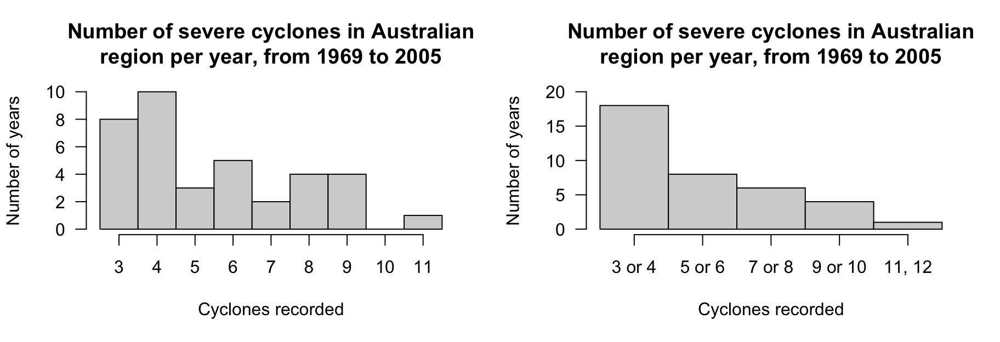
FIGURE 11.3: Two histograms of the severe-cyclone data.
The axis displaying the counts (or percentages) should start from zero, since the height of the bars visually implies the frequency of those observations (see Example 17.3).
When the quantitative variable is continuous, care is needed when constructing the histogram. Since the data are continuous, the data must be rounded. (For instance, the birthweights in Fig. 11.2 are rounded to one decimal place of a kilogram.) This means care is needed when defining boundaries between bins, and ensuring clarity about which bin contains observations when they lie on (or near) a boundary. One way to do this is to define the boundaries between bins to one more decimal place than the given data (as in the final column of Table 11.2).
The choice of bin size and bin boundaries can substantially change how a histogram displays the data (Examples 11.4 and 11.6). For large datasets, these choices tend to matter less.
When observations lie on the boundary of the boxes, some software includes these observations in the lower box (which is common) and some in the higher box.
Example 11.4 (Histograms: continuous data) Consider again the weights (in kg) of babies born in a Brisbane hospital in one day (Fig. 11.2). A histogram can be constructed for these data; see below.
An observation on a boundary between the bins may be placed in the higher box (i.e., \(2.5\,\text{kg}\) is in the '\(2.5\) to \(3.0\,\text{kg}\)' box, not the '\(2.0\) to \(2.5\,\text{kg}\)' box): see the left panel. Alternatively, a boundary observation may be placed in the lower box; see the centre panel. This histogram is a picture of the frequency table in Table 11.2.
To avoid confusion, the boundaries can be defined to one more decimal place than the data (right panel), which is equivalent to counting the observations in the lower box (as in the left panel). Notice that the choice impacts the appearance of the histogram.
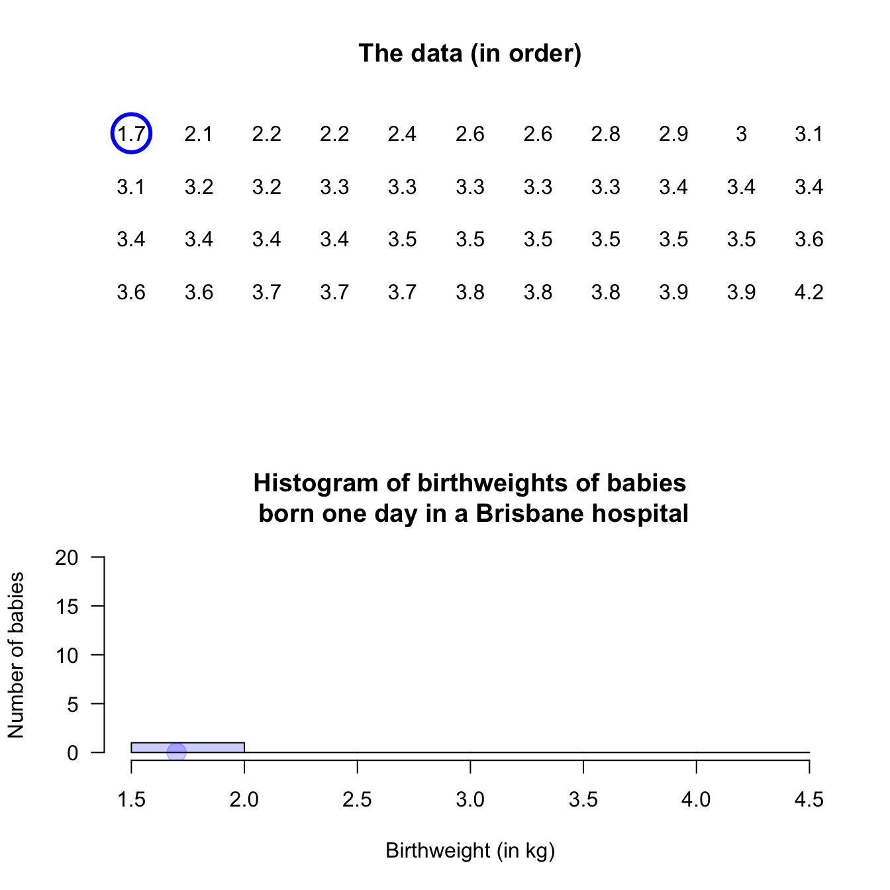
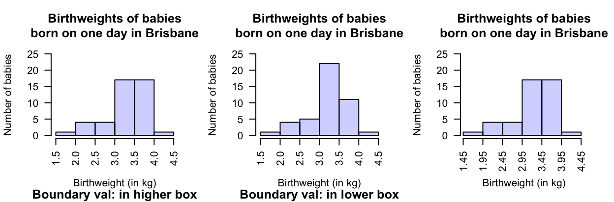
FIGURE 11.4: Histograms can be constructed in different ways to manage observations on the boundary of bins. Left: boundary values counted in the higher box. Centre: boundary values counted in the lower box. Right: defining boundaries with one more decimal place than the data may be clearer.
Example 11.5 (Histograms) Mages et al. (2017) recorded the length of 'brain freezes' after consuming cold food or drink. A histogram of the data (Fig. 11.5), shows \(11\) people experience symptoms less than \(5\,\text{s}\) in length; nine people experienced symptoms for at least \(5\) but less than \(10\,\text{s}\); and \(1\) person experienced symptoms for at least \(35\,\text{s}\) but under \(40\,\text{s}\).
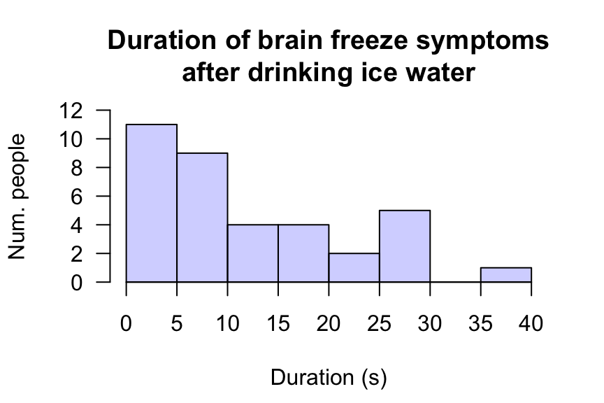
FIGURE 11.5: Histogram of the duration of brain-freeze symptoms after drinking ice water. Boundary observations are counted in the lower box.
Software tries to use sensible default choices for the number of bins, and width of the bins. However, the bin size can substantially change the appearance of the histogram. Software makes it easy to try different bin sizes to find one that displays the overall distribution well.
Example 11.6 (Histograms: bin width) A histogram for the time between eruptions (Härdle et al. 1991) of the Old Faithful geyser in Yellowstone National Park (USA) is shown below. Try changing the number of bins in the interaction below to see the impact.
FIGURE 11.6: Changing the bin width can change the impression of the distribution
11.3.2 Stemplots
Stemplots (or stem-and-leaf plots) are best described and explained using an example. Consider again the data in Fig. 11.2: the weights of babies born in a Brisbane hospital on one day.
In a stemplot, part of each number is placed to the left of a vertical line (the stems), and the rest of each number to the right of the line (the leaves).
The weights
in Fig. 11.2
are given to one decimal place of a kilogram, so the whole number of kilograms is placed to the left of the line (as the stem), and the first decimal place is placed on the right of the line (as a leaf).
The animation below shows how the stemplot is constructed.
The first weight, of \(1.7\,\text{kg}\), is entered with the \(1\) to the left of the line, and the \(7\) to the right: 1 | 7.
Similarly, \(2.1\,\text{kg}\) is entered as 2 | 1 and \(2.2\,\text{kg}\) is entered as 2 | 2, sharing the same stem as for \(2.1\,\text{kg}\).
The plot shows that most birthweights are \(3\)-point-something kilograms.
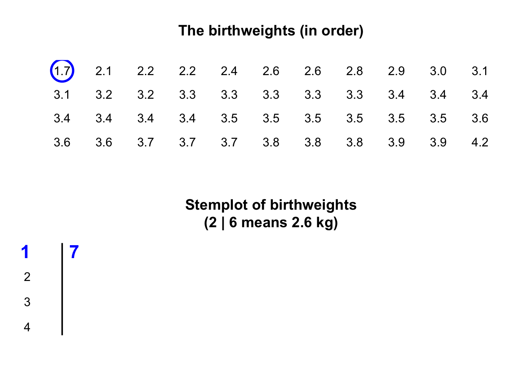
For stemplots:
- the original data remain visible.
- place the left-most digit(s) (e.g., kilograms) on the left (stems).
- place the right-most digit (e.g., first decimal of a kilogram) on the right (leaves).
- some data do not work well for a stemplot.
- data may sometimes need suitable rounding before creating the stemplot (the baby weights were originally given to three decimal places).
- the numbers in each row should be evenly spaced, with the numbers in the columns under each other, so the length of each stem is proportional to the number of observations.
- the observations are ordered within each stem, so patterns in the data can be seen.
- add an explanation for reading the stemplot. For example, the stemplot for the baby-birth data says '\(2\) | \(6\) means \(2.6\,\text{kg}\)' (rather than, say, \(0.26\,\text{kg}\), or \(2\,\text{lb}\) \(6\,\text{oz}\)).
Example 11.7 (Stemplots) Wright et al. (2021) recorded the chest-beating rate of gorillas. The stemplot in the animation below shows the stemplot being constructed, and for gorillas aged under \(20\) years of age shows a lot of variation in the chest-beating rate.
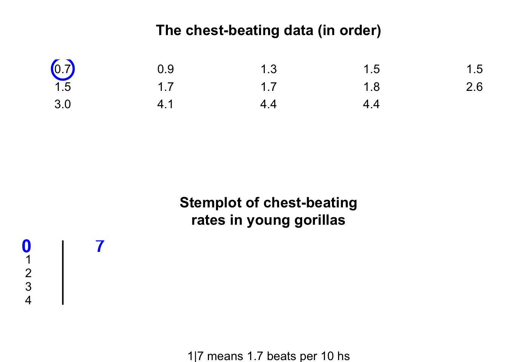
The following short video may help explain some of these concepts:
11.3.3 Dot charts (quantitative data)
Dot charts show the data on a single (usually horizontal) axis, with each observation represented by a dot (or other symbol). Sometimes, observations are identical, or nearly so; to avoid points being plotted on top of other points (called overplotting), the points are jittered (placed with some added randomness in the vertical direction) or stacked (placed above each other).
Example 11.8 (Dot charts) Consider the weights (in kg) of babies born in a Brisbane hospital (Fig. 11.2). A dot chart (Fig. 11.8) shows that most babies were born between \(3\) and \(4\,\text{kg}\). The points have been jittered.
Example 11.9 (Dot charts) The chest-beating rate of young gorillas (Example 11.7) can be displayed using a dot chart (Fig. 11.7, top panel). The points have been stacked.
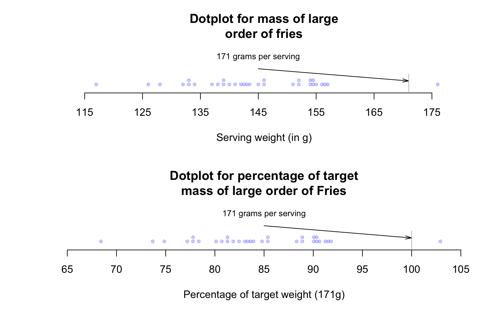
FIGURE 11.7: Large orders of french fries: mass measurements (top panel) and percentage of target mass (below panel).
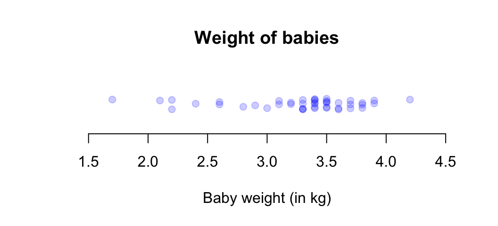
FIGURE 11.8: A dot chart of the baby-weight data.
11.3.4 Describing the distribution
Graphs are constructed to help readers understand the data. Hence, after producing a graph, the distribution of the data should be described, focusing on four features:
- The shape of the distribution. That is, are most of the values smaller or larger, or about evenly distributed between smaller and larger values?
- The average of the data. What is an average, central or typical value?
- The variation in the bulk of the data.
- Any outliers (unusually large or small observations) or unusual features.
These can be described in rough terms. The average, variation and outliers are usually described numerically, too (Sect. 11.6 to Sect. 11.8).
Example 11.10 (Describing quantitative data) The weights of babies (Example 11.4) are typically between about \(2.5\,\text{kg}\) and \(3\,\text{kg}\) (the average), with most between \(1.5\,\text{kg}\) and \(4.5\,\text{kg}\) (variation). A few babies have very low weights (shape), probably premature births. No unusual values are present.
11.4 Parameters and statistics
The purpose of describing sample data is to understand the population that the sample comes from, and which the RQ asks about. Any computed numerical quantities (such as averages) are computed from the sample, even though the population is of interest. As a result, distinguishing parameters and statistics is important.
Definition 11.2 (Parameter) A parameter is a number, usually unknown, describing some feature of a population.
Definition 11.3 (Statistic) A statistic is a number describing some feature of a sample (to estimate the unknown value of the population parameter).
A statistic is a numerical value estimating an unknown population value. However, countless samples are possible (Sect. 6.2), and so countless possible values for the statistic---all of which are estimates of the value of the parameter---are possible. The observed value of the statistic depends on which one of the countless possible samples is selected.
The RQ identifies the population, but in practice only one of the many possible samples is studied. Statistics are estimates of parameters, and the value of the statistic is not the same for every possible sample. We only observe one value of the statistic from our single observed sample.
11.5 Describing shape
The shape of a distribution may be able to be described using some common terminology.
- In right (or positively) skewed distributions, most data are smaller, with some larger values.
- In left (or negatively) skewed distributions, most data are larger, with some smaller values.
- In symmetric distributions, the left and right sides of the graph are roughly similar.
- In bimodal distributions, the distribution has two peaks.
The carousel below (click the left and right arrows to move through the example plots) shows typical shapes. Sometimes, no short descriptions (as above) are suitable.
FIGURE 11.9: Some common shapes of the distribution of qualitative data
Example 11.11 (Bimodal data) The Old Faithful geyser in Yellowstone National Park (USA) erupts regularly (Härdle et al. 1991). The histogram for the time between eruptions (Fig. 11.6, left panel) is bimodal, with peaks near \(55\,\text{mins}\) and \(80\,\text{mins}\).
The weight of babies born in Brisbane (Fig. 11.4) are slightly skewed left.
11.6 Numerical summary: averages
The average (or location, or central value) for quantitative sample data can be described numerically in many ways. The two most common are:
- the sample mean (or sample arithmetic mean), which estimates the unknown population mean (Sect. 11.6.1).
- the sample median, which estimates the unknown population median (Sect. 11.6.2).
In both cases, the parameter is estimated by a statistic. Understanding whether to use the mean or median is important.
'Average' can refer to means, medians or other measures of centre. Use the precise term 'mean' or 'median', rather than 'average', when possible.
Example 11.12 (Averages) Consider the daily river flow volume ('streamflow') at the Mary River (Queensland, Australia) from 01 October 1959 to 17 January 2019 (Marshman and Dunn 2025). The 'average' daily streamflow in February could be described using either:
- the sample mean daily streamflow, which is \(1\,123.2\) ML.
- the sample median daily streamflow, which is \(146.1\) ML.
Both are an 'average value', and of the same data, yet give very different values. This implies the mean and median measure the 'average' differently, and have different meanings. Which is the best 'average' to use? To decide, both averages need to be studied.
11.6.1 Average: the mean
The mean of the population is denoted by \(\mu\), and its value is almost always unknown. The mean of the population is estimated by the mean of the sample, denoted \(\bar{x}\). In this context, the value of the unknown parameter is \(\mu\), and the value of the statistic is \(\bar{x}\).
The sample mean estimates the population mean, and every sample is likely to give a different value for the sample mean. We usually only have one sample.
The Greek letter \(\mu\) is pronounced 'mew' (rhymes with 'chew'). \(\bar{x}\) is pronounced 'ex-bar'.
Example 11.13 (Estimating a population mean) Consider a small dataset for answering this descriptive RQ: 'For gorillas aged under \(20\), what is the average chest-beating rate?' The population mean rate (denoted \(\mu\)) is to be estimated.
Every gorilla cannot be studied, so a sample is studied. The unknown population mean \(\mu\) is estimated using the sample mean (\(\bar{x}\)) of \(n = 14\) young gorillas (Example 11.7, top panel). Of course, a different sample would likely give a different value for \(\bar{x}\).
The sample mean is the 'balance point' of the observations. The animation below shows how the mean acts as the balance point for the gorilla data. Also, the positive and negative distances (the 'deviations') of the observations from the mean add to zero, as in the animation below. Both of these explanations seem reasonable for identifying an 'average' value for the data.
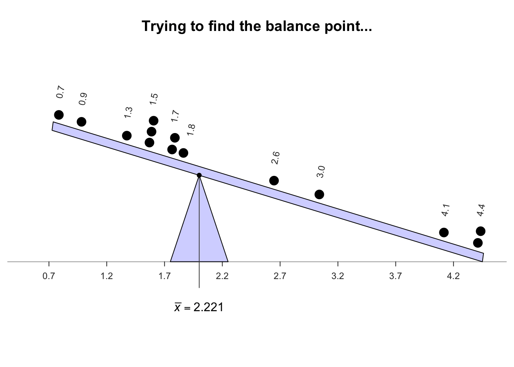
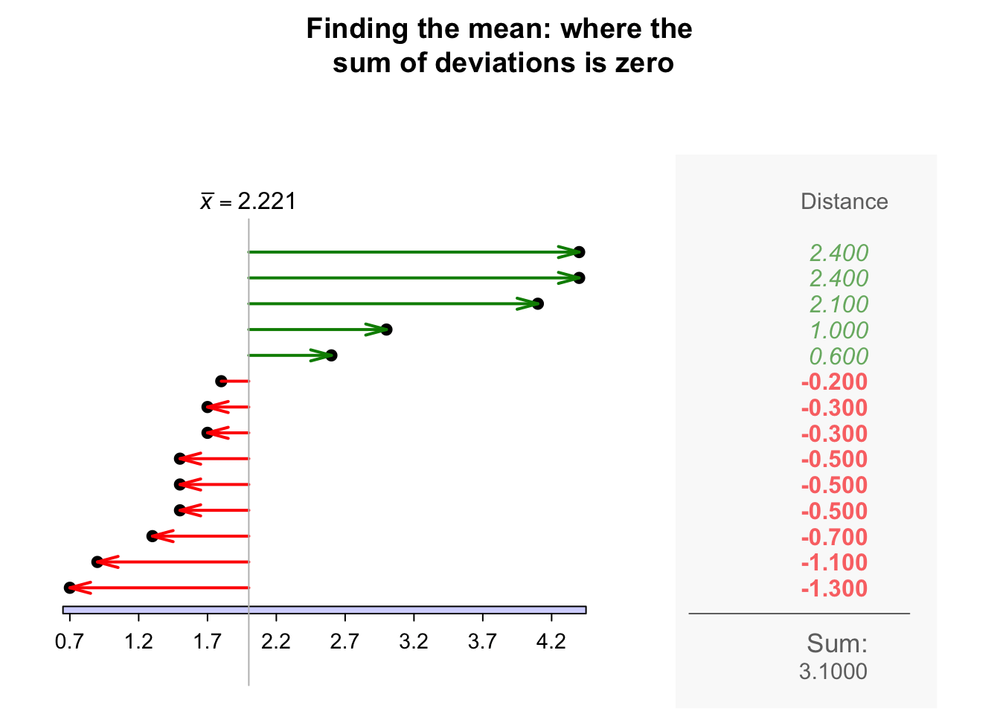
Definition 11.4 (Mean) The mean is one way to measure the 'average' value of quantitative data. The arithmetic mean is the 'balance point' of the data. The positive and negative distances from the mean add to zero.
To find the value of the sample mean, add (denoted by \(\sum\)) all the observations (denoted by \(x\)) then divide by the number of observations (denoted by \(n\)). In symbols: \[ \bar{x} = \frac{\sum x}{n}. \]
Example 11.14 (Computing a sample mean) For the chest-beating data (Fig. 11.8), an estimate of the population mean (i.e., the sample mean) chest-beating rate is found by summing all \(n = 14\) observations then dividing by \(n = 14\): \[ \overline{x} = \frac{\sum x}{n} = \frac{0.7 + 0.9 + \cdots + 4.4}{14} = \frac{31.1}{14} = 2.221429. \] The sample mean, the best estimate of the population mean, is \(2.22\) beats per \(10\,\text{h}\).
The sample mean is usually calculated using statistical software for large amounts of data, or a calculator for small amounts of data. However, knowing how the mean is computed is helpful.
Software and calculators often produce numerical answers to many decimal places, not all of which may be meaningful or useful. A simple, but often useful, rule-of-thumb is to round to one or two more significant figures than the original data. Software usually does not add measurement units to the answer either.
The chest-beating data are given to one decimal place, so the sample mean rate is given as \(\bar{x} = 2.22\) beats per \(10\,\text{h}\).
Example 11.15 (Computing a sample mean) Griffin et al. (1960) recorded the distance at which flies (Drosophila) were detected by bats for \(n = 11\) detections (Table 11.3). The population mean distance is estimated by the sample mean as \(\bar{x} = 532/11 = 48.4\,\text{cm}\).
| \(62\) | \(68\) | \(34\) | \(27\) | \(83\) | \(40\) |
| \(52\) | \(23\) | \(45\) | \(42\) | \(56\) |
11.6.2 Average: the median
A median is a value separating the largest \(50\)% of the data from the smallest \(50\)% of the data. In a dataset with \(n\) values, the median is ordered observation number \((n + 1)\div 2\). (The value of the median is not \((n + 1)\div 2\), and the median not necessarily halfway between the minimum and maximum values in the data.)
Many calculators cannot find the median. The median has no commonly-used symbol, though \(\tilde{\mu}\) and \(\tilde{x}\) are sometimes used for the population and sample medians respectively.
Definition 11.5 (Median) The median is one way to measure the 'average' value of data. A median is a value such that half the values are larger than the median, and half the values are smaller than the median.
Example 11.16 (Computing a sample median) To find a sample median for the chest-beating data (Fig. 11.8), first arrange the data in numerical order (Table 11.4). The median separates the larger seven numbers from the smaller seven numbers. With \(n = 14\) ordered observations, the median is at position \((14 + 1)/2 = 7.5\) (the median itself is not \(7.5\)). This means that the median is located between the seventh and eighth ordered observations.
Thus, the sample median, an estimate of the population median, is between \(1.7\) (ordered observation \(7\)) and \(1.7\) (ordered observation \(8\)). Since these values are the same, the sample median is \(1.7\) beats per \(10\,\text{h}\).
| 0.7 | 0.9 | 1.3 | 1.5 | 1.5 | 1.5 | 1.7 | 1.7 | 1.8 | 2.6 | 3 | 4.1 | 4.4 | 4.4 |
To clarify:
- if the sample size \(n\) is odd (see Example 11.17), the median is the middle number when the observations are ordered.
- if the sample size \(n\) is even (such as the chest-beating data; Example 11.16), the median is halfway between the two middle numbers, when the observations are ordered.
Software may use slightly different rules when \(n\) is even, producing slightly different values for the median.
The sample median estimates the population median, and every sample is likely to have a different value for the sample median. We usually only have one sample.
Example 11.17 (Computing a sample median) For the bat data (Table 11.3), the estimate of the population median distance at which bats detect the flies is the sample median. With \(n = 11\), the median is the \((11 + 1)/2 = 6\)th ordered value, which is \(45\,\text{cm}\).
11.6.3 Which average to use?
Consider the daily streamflow at the Mary River again (Example 11.12): the sample mean daily streamflow is \(1\,123\) ML, and the sample median daily streamflow is \(146.1\) ML. Which is 'best' for measuring the average streamflow?
For these data, \(86\)% of observations are smaller than the mean, but \(50\)% of the observations are smaller than the median (by definition). The mean is hardly a central value.
A dot chart of the daily streamflow (Fig. 11.10; jittered) shows that the data are very highly right-skewed, with many very large outliers (presumably flood events).
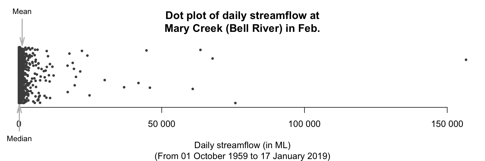
FIGURE 11.10: A dot plot of the daily streamflow at Mary River from 1960 to 2017, for February (\(n = 1\,650\)). Many very large outliers exist. Note: values have been jittered in the vertical direction, but overplotting is still present near \(0\).
The streamflow data are very right skewed, which is important for explaining the difference between the values of the sample mean and the sample median:
- means are best used for approximately symmetric data, because the mean is influenced by outliers and skewness.
- medians are best used for data that are highly skewed or contain outliers, because the median is not influenced by outliers or skewness.
Means tend to be too large if the data contain large outliers or severe right skewness, and too small if the data contain small outliers or severe left skewness. The Mary River data contains extremely large outliers---and many of them---so the mean is much larger than the median. The median is the better measure of average for these data. However, understanding the variation is probably more important than understanding the average value (Sect. 11.7), and the data may even be better described using percentiles (Sect. 11.7.4).
The mean is generally used rather than the median if possible (for practical and mathematical reasons), and is the most commonly-used measure of location. However, the mean is not always appropriate (as the mean is influenced by outliers and skewness). The mean and median are similar in approximately symmetric distributions. Sometimes, quoting both the mean and the median may be appropriate.
11.7 Numerical summary: variation
For quantitative data, the amount of variation in the bulk of the data should be described. Many ways exist to measure the variation in a dataset, including:
- the range, which is very simple and simplistic so is not often used (Sect. 11.7.1).
- the standard deviation, which is commonly used (Sect. 11.7.2).
- the interquartile range (or IQR), which is commonly used (Sect. 11.7.3).
- percentiles, which are useful in specific situations (Sect. 11.7.4), especially for very skewed data.
As always, a value computed from a sample (the statistic) estimates the unknown value in the population (the parameter), and every sample can produce a different estimate.
11.7.1 Variation: the range
The range is the simplest and easiest-to-compute measure of variation.
Definition 11.6 (Range) The range is the maximum value minus the minimum value.
The range is not often used as it only uses two values in a data set, both of which are extreme observations. As a result, the range is highly influenced by outliers. Sometimes, the range is given by stating both the maximum and the minimum value in the data instead of the difference between these values. The range is measured in the same measurement units as the data, and is usually quoted with the median.
Example 11.18 (The range) For the chest-beating data (Table 11.4), the largest value is \(4.4\), and the smallest value is \(0.7\); hence \[ \text{Range} = 4.4 - 0.7 = 3.7. \] The range of the chest-beating rate is \(3.7\) beats per \(10\,\text{h}\).
11.7.2 Variation: the standard deviation
The population standard deviation (a parameter) is denoted by \(\sigma\) and is estimated by the sample standard deviation \(s\) (a statistic). The standard deviation is the most commonly-used measure of variation. It is tedious to compute manually, so is usually calculated using statistical software for large amounts of data, or a calculator for small amounts of data.
The standard deviation is (approximately) the mean distance that observations are from the mean. This seems like a reasonable way to measure the amount of variation in data.
The Greek letter \(\sigma\) is pronounced 'sigma'.
The sample standard deviation estimates the population standard deviation, and every sample is likely to have a different value for the sample standard deviation. We usually only have one sample.
Definition 11.7 (Standard deviation) The standard deviation is, approximately, the mean distance of the observations from the mean.
Even though you do not have to use the formula to calculate \(s\) (use software), we will demonstrate to show exactly what \(s\) calculates. The formula for computing the value of \(s\) is \[ s = \sqrt{ \frac{\sum(x - \bar{x})^2}{n - 1} }, \] where \(\bar{x}\) is the sample mean, \(x\) represents the individual data values, \(n\) is the sample size, and the symbol '\(\sum\)' means to add (Sect. 11.6.1). Using the formula requires these steps.
- Calculate the sample mean: \(\overline{x}\).
- Calculate the deviation of each observation \(x\) from the sample mean: \(x - \bar{x}\).
- Square these deviations (to make them all positive values): \((x - \bar{x})^2\).
- Add these squared deviations: \(\sum(x - \bar{x})^2\).
- Divide the answer by \(n - 1\).
- Take the (positive) square root of the answer (to 'undo' the squaring of the data).
You do not need to use the formula! You should know how to use software or a calculator to find the value of the standard deviation, what the standard deviation measures, and how and when to use it.
Example 11.19 (Computing a sample standard deviation) For the chest-beating data (Table 11.4), the squared deviations of each observation from the mean of \(2.2214\) (using four decimal places in calculations) are shown in Fig. 11.11. The sum of the squared distances is \(20.9636\). Then, the sample standard deviation is: \[ s = \sqrt{\frac{20.9636}{14 - 1}} = \sqrt{ 1.612585} = 1.269876. \] The sample standard deviation of the chest-beating rate is \(1.27\) per \(10\,\text{h}\).
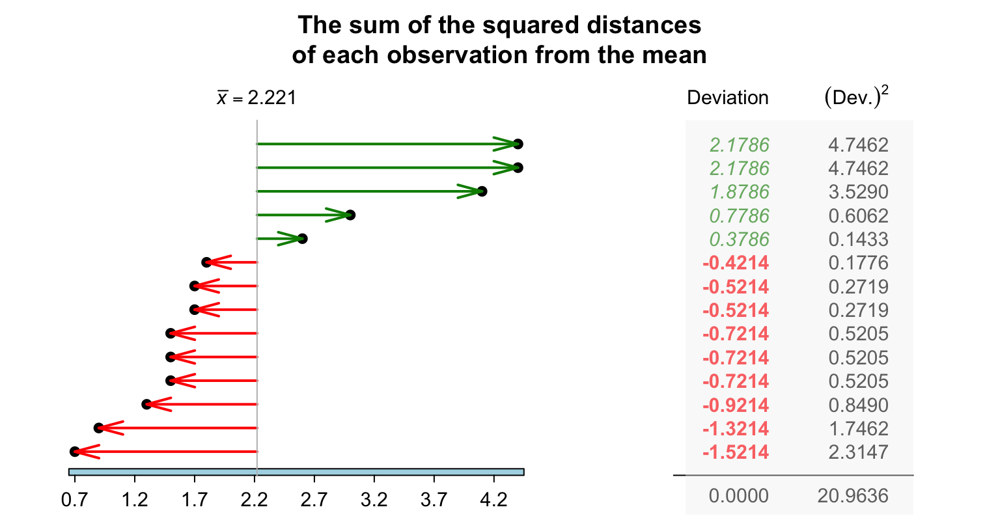
FIGURE 11.11: The standard deviation is related to the sum of the squared-distances from the mean. The chest-beating data are used. The sum of the deviations is always zero.
The sample standard deviation \(s\) is:
- positive (unless all observations are the same, when \(s = 0\); that is, zero variation).
- best used for (approximately) symmetric data.
- usually quoted with the mean.
- the most commonly-used measure of variation.
- measured in the same units as the data.
- influenced by skewness and outliers, like the mean.
11.7.3 Variation: the interquartile range (IQR)
The standard deviation uses the value of \(\bar{x}\), so is impacted by skewness and outliers just like the sample mean. A measure of variation not affected by skewness and outliers is the interquartile range, or IQR. To understand the IQR, understanding quartiles is necessary first.
Definition 11.8 (Quartiles) Quartiles describe the shape of the data.
- The first quartile \(Q_1\) is a value separating the smallest \(25\)% of observations from the largest \(75\)%. The \(Q_1\) is like the median of the smaller half of the data, halfway between the minimum value and the median.
- The second quartile \(Q_2\) is a value separating the smallest \(50\)% of observations from the largest \(50\)%. (This is also the median.)
- The third quartile \(Q_3\) is a value separating the smallest \(75\)% of observations from the largest \(25\)%. The \(Q_3\) is like the median of the larger half of the data, halfway between the median and the maximum value.
Quartiles divide the data into four parts of approximately equal numbers of observations. The interquartile range (or IQR) is the difference between \(Q_3\) and \(Q_1\).
Definition 11.9 (IQR) The IQR is the range in which the middle \(50\)% of the data lie: the difference between the third and the first quartiles.
The sample IQR estimates the population IQR, and every sample is likely to have a different value for the sample IQR. We usually only have one sample.
For the chest-beating data (Table 11.4), where \(n = 14\) (an even number of observations), the median is \(1.7\) (Example 11.16). The data then can be split into smaller and larger halves, each with seven values:
- \(0.7\) \(0.9\) \(1.3\) \(1.5\) \(1.5\) \(1.5\) \(1.7\)
- \(1.7\) \(1.8\) \(2.6\) \(3.0\) \(4.1\) \(4.4\) \(4.4\)
Since each half has seven observations (an odd number), the median of each half is the \((7 + 1)/2 = 4\)th ordered value. Hence:
- \(Q_1\), the first quartile, is the median of the smaller half; \(Q_1 = 1.5\). About \(25\)% of observations are smaller than \(1.5\).
- \(Q_2\), the second quartile or median, is \(1.7\), so \(50\)% of observations are smaller than \(1.7\).
- \(Q_3\), the third quartile, is the median of the larger half; \(Q_3 = 3.0\). About \(75\)% of observations are smaller than \(3.0\).
To divide the data into four parts of equal numbers of observations, each part would need \(14/4 = 3.5\) observations, which is not possible. Hence, we say the values of \(Q_1\) and \(Q_3\) are 'about' the values given. (Software sometimes uses a different method for computing the quartiles.) Using these values, the IQR is \(Q_3 - Q_1\) = \(3.0 - 1.5 = 1.5\), as shown in Fig. 11.12.
Since the IQR measures the range of the central \(50\)% of the data, the IQR is not influenced by outliers. The IQR is measured in the same measurements units as the data.
Software often uses different rules to compute quartiles (and medians) that may produce slightly different answers. In large datasets, the differences are usually minimal.
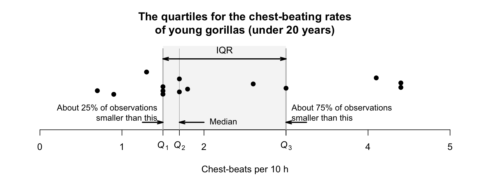
FIGURE 11.12: A dot chart (with jittering) for the chest-beating data for young gorillas, showing the IQR.
When \(n\) is odd, the median may or may not be included in each of these halves when computing \(Q_1\) and \(Q_3\); we decide not to include the median in each half.
Example 11.20 (Computing the IQR for $n$ odd) The bat data (Table 11.3) has \(n = 11\) observations. The smaller and larger halves of the data, without the median of \(45\), are:
- \(23\) \(27\) \(34\) \(40\) \(42\): the median is \(Q_1 = 34\).
- \(52\) \(56\) \(62\) \(68\) \(83\): the median is \(Q_3 = 62\).
Hence, the IQR is \(62 - 34 = 28\,\text{cm}\). (If the median is included in each half, the IQR is \(59 - 37 = 22\,\text{cm}\).)
11.7.4 Variation: percentiles
Percentiles are like quartiles; in fact, quartiles are a special case of percentiles.
Definition 11.10 (Percentiles) The \(p\)th percentile of the data is a value separating the smallest \(p\)% of the data from the rest.
For example:
- the \(12\)th percentile separates the smallest \(12\)% of the data from the rest.
- the \(67\)th percentile separates the smallest \(67\)% of the data from the rest.
- the \(94\)th percentile separates the smallest \(94\)% of the data from the rest.
This means that the first quartile \(Q_1\) is the \(25\)th percentile, the second quartile \(Q_2\) is the \(50\)th percentile (and median), and the third quartile \(Q_3\) is the \(75\)th percentile.
Software uses various rules to compute percentiles. In large datasets, the differences are usually minimal.
Percentiles are especially useful for very skewed data in certain applications. For instance, scientists who monitor rainfall and stream heights, and engineers who use this information, are more interested in extreme weather events rather than the 'average' event. Structures need to be designed to withstand \(1\)-in-\(100\) year events (the \(99\)th percentile) or similar, rather than 'average' events. Percentiles are measured in the same measurements units as the data.
Example 11.21 (Percentiles) For the streamflow data at the Mary River (Example 11.12), the February data are highly right-skewed (Fig. 11.10). The median (\(50\)th percentile) is \(146.1\) ML. However, the \(95\)th percentile is \(3\,480\) ML and the \(99\)th percentile is \(19\,043\) ML.
Constructing infrastructure for the median streamflow would be highly inadequate.
11.7.5 Which measure of variation to use?
Which is the 'best' measure of variation for quantitative data? As with measures of location, the answer depends on the data.
Since the standard deviation formula uses the mean, it is impacted in the same way as the mean by outliers and skewness. Hence, the standard deviation is best used with approximately symmetric data. The IQR is best used when data are skewed or outlier are present. Sometimes, both the standard deviation and the IQR can be quoted.
11.8 Numerical summary: identifying outliers
Outliers are 'unusual' observations: those quite different from the bulk of the data (larger or smaller). Outliers are 'unusual', but not necessarily 'incorrect' or 'bad' observations. Rules for deciding if an observation is an outlier are always arbitrary.
Definition 11.11 (Outliers) An outlier is an observation that is 'unusual' (either larger or smaller) compared to the bulk of the data. Rules for identifying outliers are arbitrary.
Two rules for identifying outliers are:
- the standard deviation rule, which is only useful when the data have an approximately symmetric distribution (Sect. 11.8.1).
- the IQR rule, which is useful in most situations (Sect. 11.8.2).
11.8.1 The standard deviation rule
The standard deviation rule uses the mean and the standard deviation, so is suitable for approximately symmetric distributions (when means and standard deviations are sensible numerical summaries). The rationale behind this rule is explained in Sect. 20.3.
Definition 11.12 (Standard deviation rule for identifying outliers) For approximately symmetric distributions, an observation more than three standard deviations from the mean may be considered an outlier.
All rules for identifying outliers are arbitrary, and sometimes the standard deviation rule is given slightly differently. For example, outliers may be identified as observations more than \(2.5\) standard deviations from the mean. Both rules are acceptable, since the definition is arbitrary.
Example 11.22 (Standard deviation rule for identifying outliers) An engineering project (Hald 1952) studied a new building material, to estimate the average permeability. Permeability time (the time for water to permeate the sheets) was measured from \(81\) pieces of material (in seconds).
For these data, the mean is \(\bar{x} = 43.162\) and the standard deviation is \(s = 27.358\). Using the standard deviation rule, outliers are observations smaller than \(43.162 - (3\times 27.358)\) or larger than \(43.162 + (3\times 27.358)\); that is, smaller than \(-38.9\,\text{s}\) (which is clearly not appropriate here, as the data must be positive values), or larger than \(125.2\,\text{s}\). This rule is shown in Fig. 11.13; two observations are identified as outliers using the standard deviation rule.
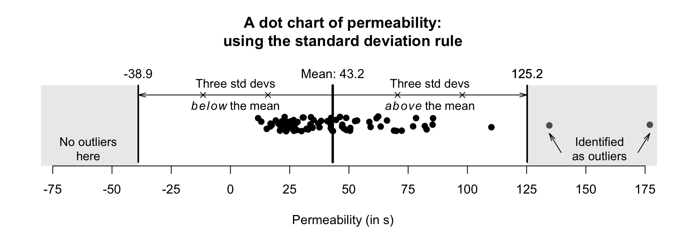
FIGURE 11.13: Outliers identified using the standard deviation rule for the permeability data.
11.8.2 The IQR rule
Since the standard deviation rule for identifying outliers relies on the mean and standard deviation, it is not appropriate for non-symmetric distributions. Another rule is needed for identifying outliers in these situations: the IQR rule.
Definition 11.13 (IQR rule for identifying outliers) The IQR rule identifies mild and extreme outliers.
- Extreme outliers: observations \(3\times \text{IQR}\) more unusual than \(Q_1\) or \(Q_3\).
- Mild outliers: observations \(1.5\times \text{IQR}\) more unusual than \(Q_1\) or \(Q_3\) (that are not extreme outliers).
This definition is easier to understand using an example.
Example 11.23 (IQR rule for identifying outliers) Using the permeability data seen in Example 11.22, a computer shows that \(Q_1 = 24.7\) and \(Q_3 = 50.6\), so \(\text{IQR} = {50.6 - 24.7 = 25.9}\). Then, extreme outliers are observations \(3\times 25.9 = 77.7\) more unusual than \(Q_1\) or \(Q_3\). That is, extreme outliers are observations are:
- more unusual than \(24.7 - 77.7 = -53.0\) (that is, less than \(-53.0\)); or
- more unusual than \(50.6 + 77.7 = 128.3\) (that is, greater than \(128.3\)).
Mild outliers are observations \(1.5\times 25.9 = 38.9\) more unusual than \(Q_1\) or \(Q_3\) (that are not extreme outliers). That is, mild outliers are
- more unusual than \(24.7 - 38.9 = -14.2\) (that is, less than \(-14.2\)); or
- more unusual than \(50.6 + 38.9 = 89.5\) (that is, greater than \(89.5\)).
Three observations are identified as outliers using the IQR rule (Fig. 11.14): two extreme outliers, and one mild outlier.
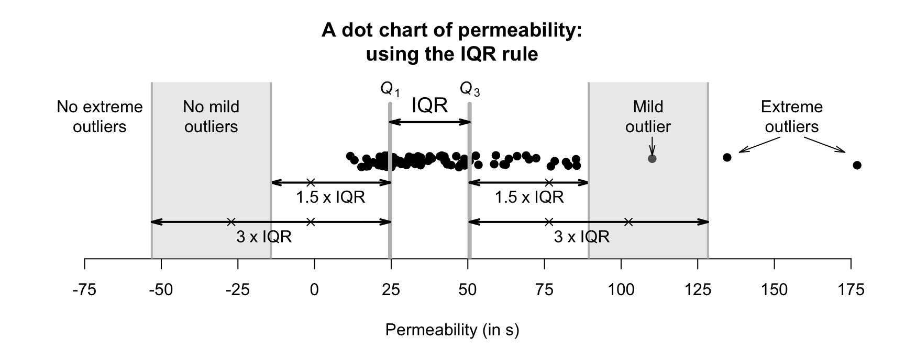
FIGURE 11.14: Mild and extreme outliers, using the IQR rule, for the permeability data.
11.8.3 Which outlier rule to use?
The standard deviation rule is most appropriate for approximately symmetric distributions; the IQR rule can be used for any distribution, but primarily for those skewed or with outliers.
Remember: all rules for identifying outliers are arbitrary.
11.8.4 What to do with outliers?
What should be done if outliers are identified in data? Deleting or removing outliers simply because they are identified as outliers is very poor practice. After all, the outliers were obtained from the study like all other observations; they belong in the data as much as any other observation. In addition, the rules for identifying outliers are arbitrary: some observations may be identified as outliers using one rule, but not by another.
Outliers are unusual observations; they are not necessarily mistakes.
Managing outliers depends on why they occur (Dunn and Smyth (2018), p. 138):
- the outlier is clearly a mistake (e.g., an age of \(222\)). If the mistake cannot be fixed (e.g., the completed questionnaire form is lost), the observation can be deleted. Similarly, if the outlier comes from an error or mistake in the data collection (e.g., too much fertiliser was accidentally applied), the observation can be deleted.
- the outlier represents a different population. Suppose an outlier is identified in a study of students, corresponding to a student aged 65. If the next oldest student in the data is aged \(39\), the outlier can be removed, since it belongs to a different population ('students aged over \(40\)') than the other observations ('students aged \(40\) and under'). The remaining observations can be analysed, but the results only apply to students aged under \(40\) (which should be clearly communicated).
- the reason for the outlier is unknown. In these cases, discarding outliers routinely is not recommended; the outliers are probably real observations that are just as valid as the others. Perhaps a different analysis is necessary (e.g., using medians rather than means). Furthermore, very large datasets are expected to have a small number of observations identified as outliers using the above arbitrary rules.
In all cases, whenever observations are removed from a dataset, this should be clearly explained and documented.
Example 11.24 (Outliers) The Mary River dataset (Sect. 11.6) has many extremely large outliers identified by software, but each is reasonable. They probably correspond to flood events (which could be confirmed). Removing these from the analysis would be inappropriate.
Example 11.25 (Outliers) The permeability data (Example 11.22) has large outliers, but all seem reasonable. Removing these from the analysis would be inappropriate.
11.9 Numerical summary tables
In studies with quantitative variables, the quantitative variables should be summarised in a table. The table should include, as a minimum, measures of average, variation and the sample sizes. An example is given in the next section (Table 11.5).
11.10 Example: water access
López-Serrano et al. (2022) recorded data about access to water for three rural communities in Cameroon. Three quantitative variables are recorded. Part of understanding the data requires summarising the quantitative variables; histograms are shown in Fig. 11.15, and a summary table in Table 11.5.
Many households are coordinated by women in their late \(50\)s. The number of people and number of children under \(5\) years of age are both right-skewed. One household has over \(30\) people, and has \(10\) children in that household. (These are identified as outliers, but are unlikely to be mistakes.) Some observations are missing for some variables, explaining the differences in sample sizes in Table 11.5.
| \(n\) | Mean | Median | Std dev. | IQR | Min. | Max. | |
|---|---|---|---|---|---|---|---|
| Woman's age (years) | \(120\) | \(41.6\) | \(40.5\) | \(14.56\) | \(30.25\) | \(19\) | \(61\) |
| Household size | \(121\) | \(\phantom{0}7.0\) | \(\phantom{0}6.0\) | \(\phantom{0}4.80\) | \(\phantom{0}4.00\) | \(\phantom{0}0\) | \(32\) |
| Children aged under \(5\) | \(120\) | \(\phantom{0}1.5\) | \(\phantom{0}1.0\) | \(\phantom{0}1.65\) | \(\phantom{0}2.00\) | \(\phantom{0}0\) | \(10\) |
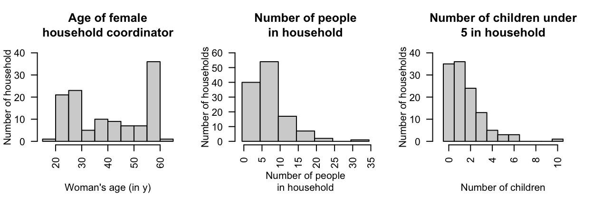
FIGURE 11.15: The age of the female household coordinator, the number of people in the household, and the number of children in the household aged under \(5\) years, for the water-access study.
11.11 Chapter summary
Quantitative data can be graphed using a histogram, stemplot (in special circumstances), or dot charts. Quantitative data can be summarised numerically; the most common techniques are indicated in Table 11.6. The mean and standard deviation are usually used whenever possible, for practical and mathematical reasons. Sometimes quoting both the mean and median (and the standard deviation and IQR) may be appropriate.
The following short video may help explain some of these concepts:
| Feature | Approximately symmetric | Not symmetric, or has outliers |
|---|---|---|
| Average | Mean | Median |
| Variation | Standard deviation | IQR |
| Outliers | Standard deviation rule | IQR rule |
11.12 Quick review questions
Are the following statements true or false?
- The IQR measures the amount of variability in data.
- The mean and the median can both be called an 'average'.
- The mean and the median are not always the same value.
- The range is a simple measure of variation in a set of data.
- The standard deviation measures the amount of variability in data.
- Another name for the median is \(Q_2\).
- \(Q_3\) is the median of the largest half of the data.
- The IQR is a useful measure of variation in data that are skewed.
- The IQR is the difference between the first and second quartiles.
- Another name for the \(75\)th percentile is \(Q_3\).
- The units of the standard deviation and the IQR are the same as for the original data.
11.13 Exercises
Answers to odd-numbered exercises are given at the end of the book.
Exercise 11.1 The Australian Bureau of Statistics (ABS) records the age at death of Australians. The histogram of the age of death for females in 2012 is shown in Fig. 11.16 (left panel). Describe the distribution.
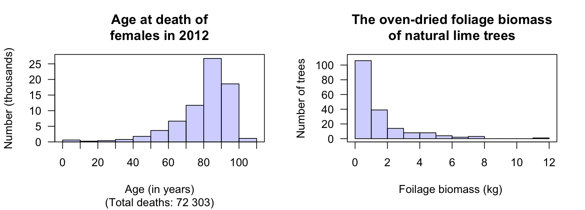
FIGURE 11.16: Left: histograms of age at death for female Australians in 2012. Right: the oven-dried foliage biomass for naturally-grown lime trees.
Exercise 11.2 [Dataset: Lime]
Schepaschenko et al. (2017b) measured the oven-dried foliage biomass of lime trees grown in natural environments.
The histogram of the foliage biomass is shown in Fig. 11.16 (right panel).
Describe the distribution.
Exercise 11.3 [Dataset: NHANES]
The histogram of the direct HDL cholesterol concentration from the American National Health and Nutrition Examination Survey (nhanes) (Pruim 2015) from \(1999\)--\(2004\) is shown in Fig. 11.17 (left panel).
- Should the mean or median be used to measure the 'average' HDL cholesterol concentration? Explain.
- Describe the distribution.
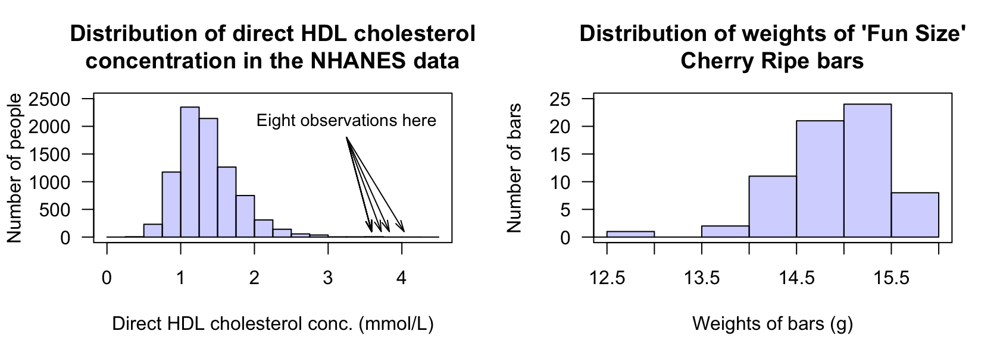
FIGURE 11.17: Left: the histogram of direct HDL cholesterol concentration from the nhanes study (large outliers exist but are hard to see, as the sample size is very large). Right: the weights of `Fun Size' Cherry Ripe chocolate bars.
Exercise 11.4 [Dataset: CherryRipe]
The histogram of the weights of 'Fun Size' Cherry Ripe chocolate bars between 2016 and 2019 is shown in Fig. 11.17 (right panel).
- Should the mean or median be used to measure the 'average' weight of a 'Fun Size' Cherry Ripe bar? Explain.
- Describe the distribution.
Exercise 11.5 Levenson (2005) recorded the number of fatalities at amusement rides in the US from \(1994\) to \(2003\) (Table 11.7). Using software or a calculator, compute:
- the sample mean number of fatalities per year over this period.
- the sample median number of fatalities per year over this period.
- the sample standard deviation of the number of fatalities per year over this period.
- the sample IQR of the number of fatalities per year over this period.
| 1994 | 1995 | 1996 | 1997 | 1998 | 1999 | 2000 | 2001 | 2002 | 2003 | |
|---|---|---|---|---|---|---|---|---|---|---|
| Fatalities: | \(2\) | \(4\) | \(3\) | \(4\) | \(7\) | \(6\) | \(1\) | \(3\) | \(2\) | \(5\) |
Exercise 11.6 Furness and Bryant (1996) studied fulmars (a seabird). The mass of the female birds were (in grams): \(635\);\(635\);\(668\);\(640\);\(645\);\(635\).
- Construct a stemplot (using the first two digits as the stems).
- Using your calculator, find the value of the sample mean.
- Using your calculator, find the value of the sample standard deviation.
- Find the value of the sample median.
- Find the value of the population standard deviation.
Exercise 11.7 Draw a stemplot of the average monthly SOI in August from \(1995\) to \(2003\) (Table 11.8). Then, use your calculator (where possible) to calculate the:
- sample mean
- sample median.
- range.
- sample standard deviation.
- sample IQR.
| 1995 | 1996 | 1997 | 1998 | 1999 | 2000 | 2001 | 2002 | 2003 | |
|---|---|---|---|---|---|---|---|---|---|
| \(\phantom{0}0.8\) | \(\phantom{0}4.6\) | \(\phantom{0}{-19.8}\) | \(\phantom{0}9.8\) | \(\phantom{0}2.1\) | \(\phantom{0}5.3\) | \(\phantom{0}{-8.2}\) | \(\phantom{0}{-14.6}\) | \(\phantom{0}{-1.8}\) |
Exercise 11.8 [Dataset: FriesWt]
Wetzel (2005) weighed orders of french fries to determine how they matched the target weight of \(171\,\text{g}\) (Table 11.9).
- Produce graphs to summarise the data.
- Use software to produce numerical summary information.
Do you think the weights meet the target weight, on average?
| \(117.0\) | \(132.0\) | \(134.0\) | \(139.0\) | \(141.0\) | \(143.0\) | \(146.0\) | \(152.0\) | \(154.0\) | \(155.0\) | \(157.0\) |
| \(126.0\) | \(133.0\) | \(137.0\) | \(139.0\) | \(142.0\) | \(143.5\) | \(146.0\) | \(152.0\) | \(154.5\) | \(156.0\) | \(176.0\) |
| \(128.0\) | \(133.0\) | \(138.0\) | \(140.0\) | \(142.5\) | \(145.0\) | \(151.0\) | \(154.0\) | \(154.5\) | \(156.5\) | \(117.0\) |
Exercise 11.9 [Dataset: Orthoses]
Swinnen et al. (2018) studied the influence of using ankle-foot orthoses in children with cerebral palsy.
The data for the \(15\) subjects is shown in Table 10.3.
- Compute the values of the sample mean, sample median, sample standard deviation and sample IQR for the heights.
- What are the values of the population mean, population median, population standard deviation and population IQR for the heights?
- Produce a stemplot of the children's heights.
- Produce a dot chart of the children's heights.
- Produce a histogram of the children's heights.
- Describe the distribution of the children's heights.
Exercise 11.10 An article studied patients who had been admitted to Castle Hill Hospital (Jenner et al. 2022). The total number of microplastics found in the lungs of each patient are shown in Table 11.10. For these patients:
- Draw a stemplot, using the numbers as (say) \(8.0\), with the decimals as the leaves.
- What are the values of the sample mean and sample median number of microplastics?
- What are the values of the population mean and population median number of microplastics?
- What is the value of the sample standard deviation of the number of microplastics?
- What is the value of the sample IQR of the number of microplastics?
| \(8\) | \(3\) | \(5\) | \(2\) | \(0\) | \(2\) | \(1\) | \(7\) | \(5\) | \(1\) | \(0\) |
Exercise 11.11 Describe the histogram in Fig. 11.5 for the brain-freeze data.
Exercise 11.12 The standard deviation for Dataset A in Fig. 11.18 is \(s = 2\). Will the standard deviation of Dataset B be smaller than or greater than \(2\)? Why?
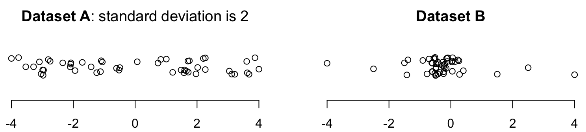
FIGURE 11.18: Dotplots of two datasets (with jittering).
Exercise 11.13 [Dataset: Jeans]
Diehm and Thomas (2018) recorded the size of pockets in men's and women's jeans, including the minimum heights of the front pockets (Fig. 11.19, left panel).
- What proportion of jeans in the sample have a minimum height less than \(17\,\text{cm}\), for men's and women's jeans?
- What proportion of jeans in the sample have a minimum height less than \(13.25\,\text{cm}\), for men's and women's jeans?
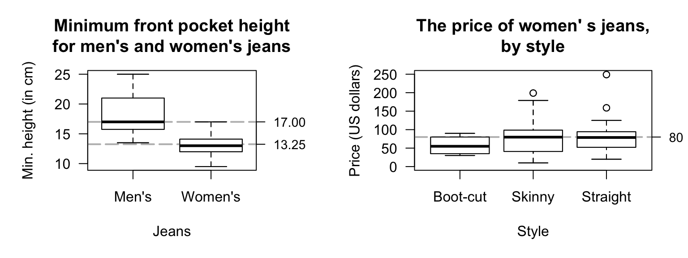
FIGURE 11.19: Left: the minimum height of the height of front pockets in jeans. Right: the price of different styles of women's jeans.
Exercise 11.14 Diehm and Thomas (2018) recorded data on the price of different styles of women's jeans (Fig. 11.19, right panel).
- What proportion of boot-cut jeans in the sample cost less than $\(80\)?
- What proportion of skinny jeans in the sample cost less than $\(80\)?
- What proportion of straight jeans in the sample cost less than $\(80\)?
- In general, which type of jeans are the cheapest?
Exercise 11.15 A professor has recorded the marks (as a percentage) for all students in her four classes for an assignment. All classes have the same number of students. The corresponding histograms are shown in Fig. 11.20.
- In which class would the median be the largest?
- In which class would the median be the smallest?
- In which class would the standard deviation be the largest?
- In which class would the standard deviation be the smallest?
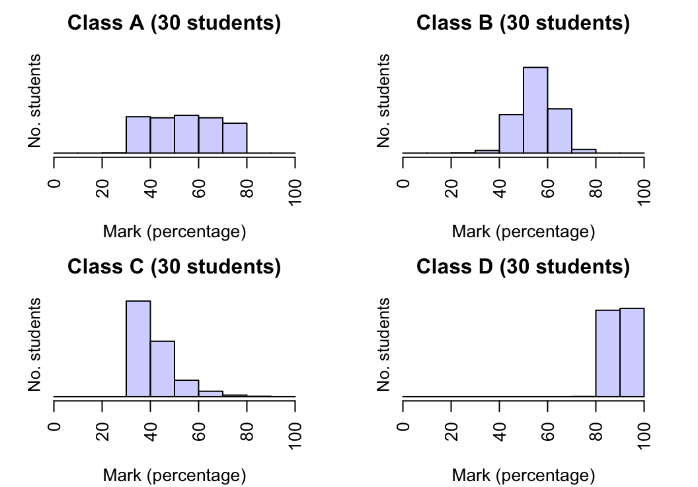
FIGURE 11.20: Histogram of marks for four classes.
Exercise 11.16 Consider the four histograms in Fig. 11.21. Which histogram is most likely to describe the shape of the following data? Why?
- The time that students remain in an examination room for a short, easy two-hour examination.
- The heights of females at a local adults' dance club.
- The starting salaries of new science graduates employed full-time.
- The volume of drink in \(375\,\text{mL}\) cans of soft drink.
- The time that students remain in the examination room for a hard, long two-hour examination.
(The first bar of the histogram is not necessarily at zero; it is the shape of the histogram that is of interest here: right skewed, left skewed, symmetric, etc.)
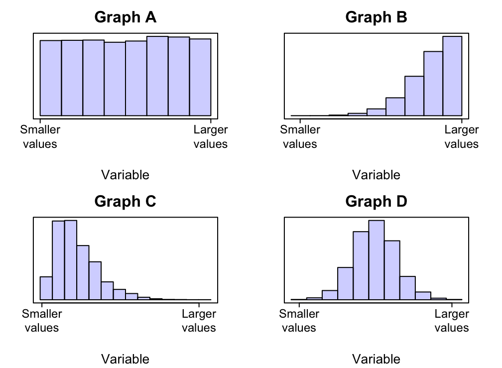
FIGURE 11.21: Four histograms: where would they be useful?